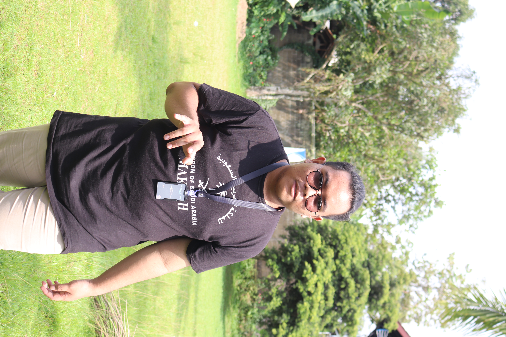

Hi, Welcome to My Portofolio
Mengajar HTML dan CSS sangat penting untuk pengembangan web. Anda akan belajar mengimpor profil seseorang menggunakan HTML untuk struktur dan CSS untuk tampilan. Dengan ini, Anda dapat menampilkan foto profil, deskripsi, dan tautan media sosial secara menarik dan profesional. Pemahaman HTML dan CSS akan membantu membuat halaman web yang fungsional dan estetis.



Rafi Abdurrahman Abqori
Fullstack Developer